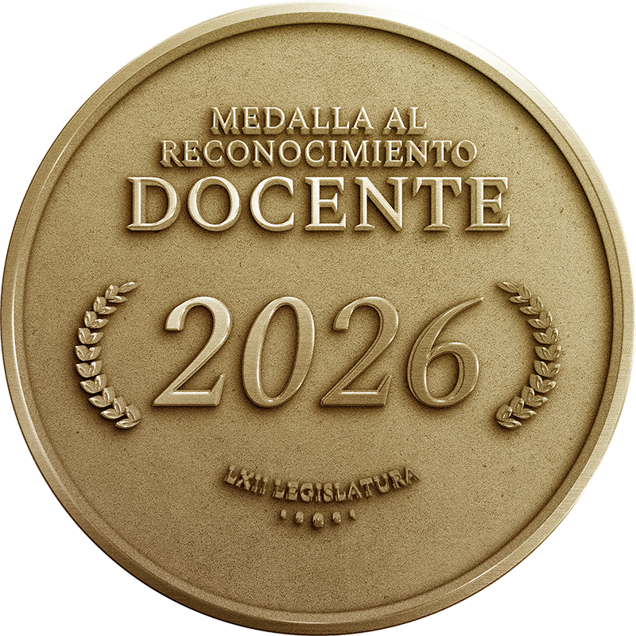

El Congreso del Estado de México, a través de la Junta de Coordinación Política de la LXII Legislatura, entrega el presente reconocimiento a las maestras y los maestros mexiquenses. Celebramos su compromiso, pasión y ardua labor. Cada reconocimiento es un merecido homenaje a su desempeño ejemplar, pues dedican su vida a inspirar mentes y abrir puertas al conocimiento. Felicitamos su invaluable contribución a la formación de las infancias y juventudes mexiquenses, así como su compromiso con la construcción de un mejor futuro para nuestra sociedad.
Bertha Navarrete Baltazar
Celzo Morales Ramírez
Amalet Villegas Montaño
Viridiana Carvajal Rubio
Lorenzo Fernández Vázquez
Alberto Said Oropeza Martínez
Nancy Moreno García
Thelma Iliana Sulvarán Nava
Berenice Jaime Romero
Martha Elba Romero Núñez
Diana Magali Nuñez Soto
Jesús Magyber de Jesús Miranda
René López Auyón
Cosme Esparza Flores
Rafael Hernández Ríos
Raúl Gómez Gómez Tagle
Patricia Álvarez García
César Jiménez Delgado
Luis Manuel Gregorio Moreno
Silvia Morales Cruz
Adriana Paola Barrera Jacales
José Alberto Hernández Nava
Humberto Cuevas Hernández
Luz María Velázquez Reyes
Maribel Segundo Chaparro
Julio Juan Villalobos Colunga
Edgar Josué Miguel Montaño
Manuel Sifuentes Compean
Elvira Nayeli Ramírez Contreras
Octavio Catarino Aguilar
Javier González Morán
Maribel Rodríguez Platas
Antonio Esquivel Rivera
Claudia Cristal Ríos Pacheco
Guadalupe Gutiérrez González
Adán Jiménez Montoya
Víctor Alejandro Wong Meraz
Felisa Yaerim López Botello
Rubén Bastida Sánchez
Ma. Guadalupe Rodríguez Carranza